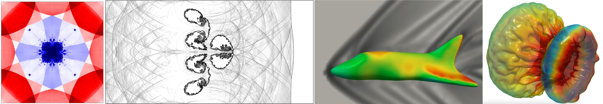

Welcome to the documentation of JAX-Fluids!
{kind=link}
JAX-Fluids is a fully-differentiable CFD solver for 3D, compressible two-phase flows. We developed this package with the intention to push and facilitate research at the intersection of ML and CFD. It is easy to use - running a simulation only requires a couple lines of code. Written entirely in JAX, the solver runs on CPU/GPU/TPU and enables automatic differentiation for end-to-end optimization of numerical models.
To learn more about implementation details and details on numerical methods provided by JAX-Fluids, feel free to read our paper.
This documentation is work in progress.
Quick Installation
This is a quick installation guide to get you set up with JAX-Fluids. Please check out our detailed installation guide for more information!
Install jaxfluids to your Python environment.
$ git clone https://github.com/tumaer/JAXFLUIDS.git jaxfluids
$ cd jaxfluids
$ pip install .
Let’s run a quick simulation to check if everything is up and working.
$ cd examples/examples_1D/02_sod
$ python run_sod.py
JAX-Fluids: First steps
Under the hood
JAX-Fluids API
- jaxfluids package
- Subpackages
- Submodules
- jaxfluids.boundary_condition module
- jaxfluids.domain_information module
- jaxfluids.flux_computation module
- jaxfluids.initializer module
- jaxfluids.input_reader module
- jaxfluids.simulation_manager module
- jaxfluids.space_solver module
- jaxfluids.unit_handler module
- jaxfluids.utilities module
- Module contents
Contact